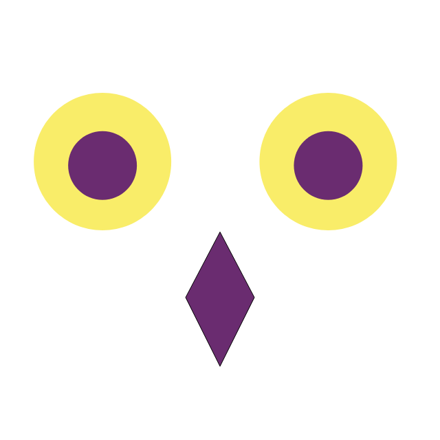

SeekNow's goal is to help people learn faster by helping them learn from each other

Problem:
A lot of people are intimidated by learning new topics because they think it’s ‘too hard’ or ‘they’re not
smart
enough’. The problem isn’t because its ‘too hard’. It’s because their teaching source doesn’t match their
learning style.
SeekNow:
Solve this problem by providing a platform where people learn in their own style (s).
According to learning Styles Online there
are 7
learning styles:
Visual (spatial):You prefer using pictures, images, and spatial understanding.
Aural (auditory-musical): You prefer using sound and music.
Verbal (linguistic): You prefer using words, both in speech and writing.
Physical (kinesthetic): You prefer using your body, hands and sense of touch.
Logical (mathematical): You prefer using logic, reasoning and systems.
Social (interpersonal): You prefer to learn in groups or with other people.
Solitary (intrapersonal): You prefer to work alone and use self-study.
SeekNow's goal is to create a platform that addresses all these goals
SeekNow is on a mission to change the education system
Here are some things that are wrong with the education system: